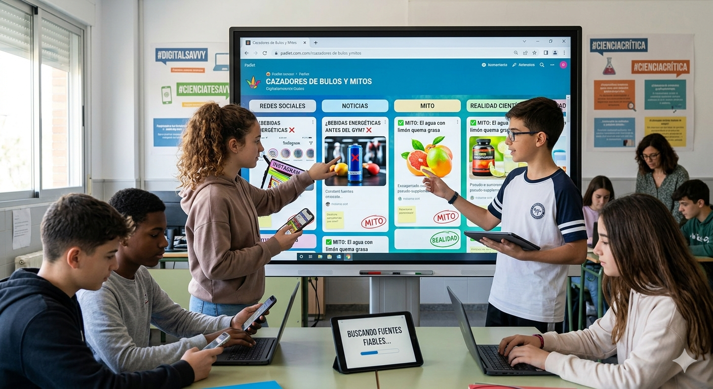

Misión: Convertiros en una unidad de élite para rastrear, identificar y desmontar mediante la ciencia los mitos y bulos alimentarios más virales de TikTok e Instagram.
¿Qué vas a conseguir?
-
Desarrollar un "radar" contra la desinformación nutricional.
-
Aprender a contrastar noticias en fuentes científicas oficiales.
-
Crear contenido digital ético y profesional.